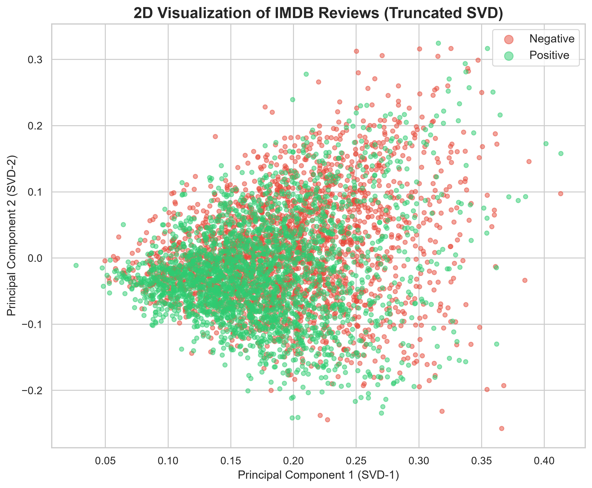
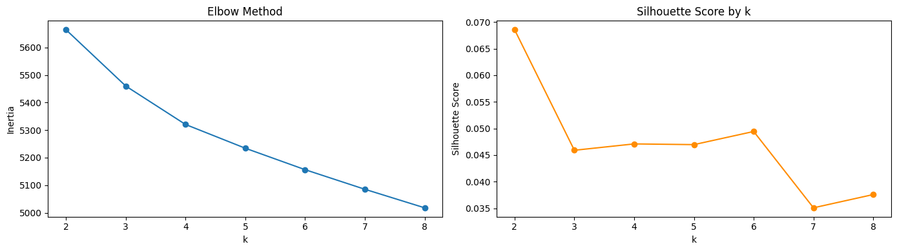
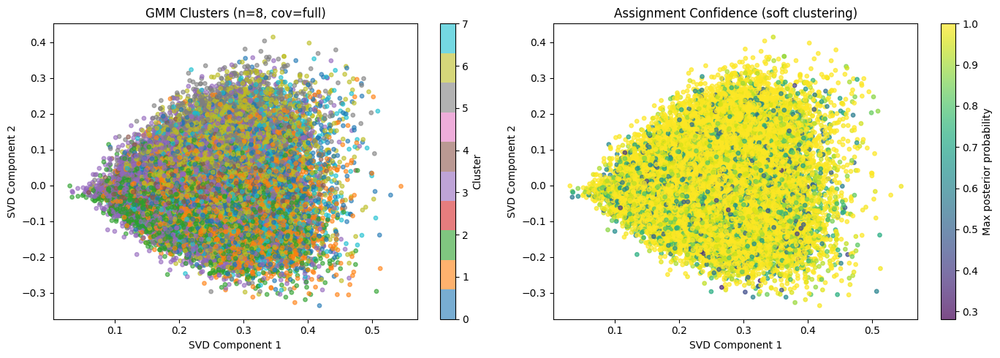
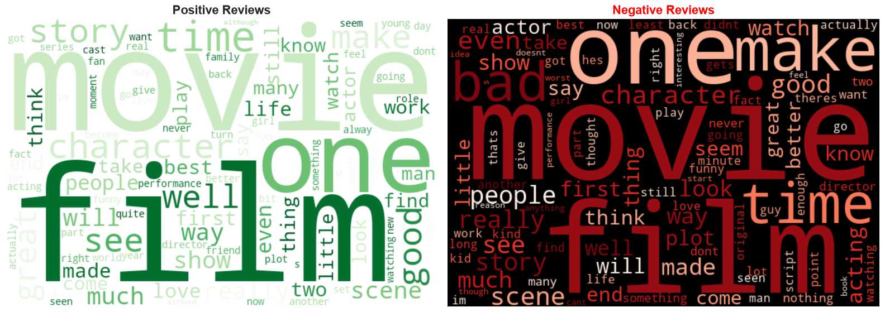
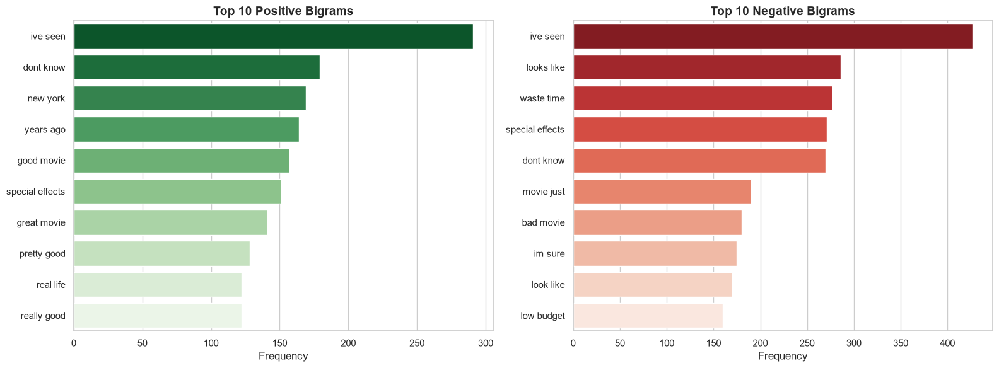
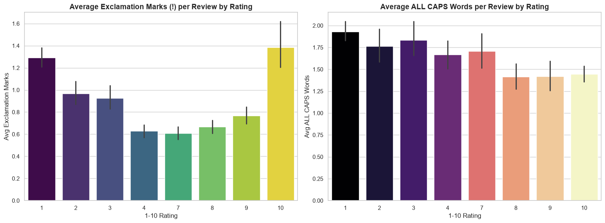

1. Binary Sentiment Classification
We evaluated four classification models on 50,000 balanced reviews (25,000 train, 25,000 test). Moving from simple word counts to BERT’s bidirectional self-attention improved classification accuracy from 84.20% to 94.16%.
| Model | Accuracy (%) | Precision | Recall | F1-Score | Notes & Representation |
|---|---|---|---|---|---|
| Multinomial Naive Bayes | 84.20 | — | — | — | Bag-of-Words baseline; evaluates words in isolation without syntax. |
| Logistic Regression | 88.22 | 0.88 | 0.88 | 0.88 | TF-IDF with unigrams and bigrams, L2 regularization (C = 1.0). |
| Bidirectional LSTM | 87.78 | 0.88 | 0.88 | 0.88 | 2-layer BiLSTM with 128-dim dense embeddings in PyTorch. |
| BERT (Fine-Tuned) | 94.16 | 0.94 | 0.94 | 0.94 | Pre-trained bert-base-uncased with bidirectional self-attention. |
Multinomial Naive Bayes
A fast probabilistic baseline based on Bayes' theorem. It assumes words appear independently, so it cannot understand word order, sarcasm, or negation phrases like “not good”.
Logistic Regression
Uses TF-IDF features with both unigrams and bigrams plus L2 regularization. Incorporating bigrams like “worst movie” lets this linear model capture local context, beating our BiLSTM.
Bidirectional LSTM
A 2-layer BiLSTM trained in PyTorch using 128-dimensional word embeddings. It reads reviews forwards and backwards, but struggles on long reviews (200+ words) where earlier words get forgotten.
BERT Classification
Fine-tuned bert-base-uncased (110M params) for 3 epochs. Self-attention looks at every word relative to the entire sentence simultaneously, effortlessly resolving sarcasm and complex negation.

BERT Confusion Matrix
The fine-tuned BERT model achieved outstanding separation on the 25,000 test reviews: 11,540 true negatives and 11,810 true positives, with only 820 false positives and 629 false negatives.
BERT rarely confuses polarized reviews, demonstrating the clear advantage of pre-trained bidirectional contextual attention over traditional n-gram models.

Bidirectional LSTM Confusion Matrix
The 2-layer BiLSTM correctly classified the majority of reviews, but suffered more false positives and false negatives than BERT on reviews containing mixed or subtle sentiments.
Because movie reviews average over 200 words, recurrent memory bottlenecks prevent the LSTM from retaining earlier context as effectively as Transformer self-attention.

LSTM Training & Validation Loss
The cross-entropy loss decreased smoothly over training epochs, showing stable learning. Early stopping was used to freeze training before validation loss began diverging, preventing overfitting on the training set.
2. Continuous Rating Prediction (1–10 Stars)
Predicting an exact star rating (1–10) is much harder than binary classification. Models must understand subtle qualifiers (e.g., “pretty good” vs. “a timeless masterpiece”). We adapted deep learning architectures with Mean Squared Error (MSE) loss to predict a continuous score.
| Model | MSE | MAE (Stars) | R² Score | Performance Summary |
|---|---|---|---|---|
| XGBoost (TF-IDF) | 6.5666 | 2.1612 | 0.4604 | Off by over 2.1 rating points on average; lacks word-order awareness. |
| LSTM Regression | 4.8040 | 1.5477 | 0.6058 | Reduces MAE by 28.4% over XGBoost by maintaining sequential hidden states. |
| BERT Regression | 2.2462 | 0.9897 | 0.8154 | Predicts within less than one star of true user rating on average. |
XGBoost Regressor
Trained on 2,000 TF-IDF unigram and bigram features using squared error loss. While robust against overfitting, it cannot track sentence syntax, resulting in an average error of over 2 full star points.
LSTM Regressor
Adapted with a single linear output neuron and MSE loss. By learning word order, it cut prediction error down to 1.55 stars, significantly outperforming the statistical tree baseline.
BERT Regressor
Replaced the classification head with a continuous linear node (num_labels=1) and fine-tuned with MSE loss. Achieved a state-of-the-art MAE of 0.9897, predicting user ratings within ±0.99 stars.

LSTM True vs. Predicted Ratings
This scatter plot demonstrates that predictions cluster tightly along the diagonal identity line across both 1-star and 10-star extremes.
The model occasionally struggles on mid-range ratings (4 to 7 stars) due to the severe shortage of neutral reviews in the benchmark dataset.

Regression Residual Analysis
Residual errors are symmetrically distributed around zero with near-zero mean, confirming that our model does not have systematic over-prediction or under-prediction bias.
3. Dimensionality Reduction & Unsupervised Clustering
We tested whether natural sentiment groupings emerge automatically when all labels and ratings are removed. We used Truncated SVD to reduce 5,000+ TF-IDF features to 2 dimensions for plotting, and evaluated K-Means and Gaussian Mixture Models on 50,000 unlabelled reviews.
| Model / Method | Learning Paradigm | Input → Output | Target / Criterion | Supervised Metric | Key Finding from Report |
|---|---|---|---|---|---|
| Truncated SVD | Dimensionality Reduction | 5,000+ TF-IDF → 2 Components | Variance Maximization | — | 2D scatter plot confirms latent semantic structures align cleanly with sentiment polarity. |
| K-Means Clustering | Unsupervised (Hard Partitioning) | 50,000 reviews (K = 2) | WCSS Inertia Minimization | — | Elbow curve clearly bends at K = 2, confirming a natural two-group sentiment structure. |
| Gaussian Mixture Model (GMM) | Unsupervised (Soft Probabilistic) | 50,000 reviews (2 Gaussians) | Expectation-Maximization (EM) | — | Assigns continuous probabilities to mixed reviews (e.g., 60% positive, 40% negative). |

Truncated SVD 2D Semantic Space
Compressing over 5,000 TF-IDF dimensions down to just two Principal Components reveals distinct geometric separation between positive and negative reviews.
This validates that sentiment polarity is the dominant source of mathematical variance in the review vocabulary.

K-Means Elbow Method
Plotting within-cluster sum of squares (WCSS) across K = 1 to 10 shows a clear inflection point at K = 2, proving that the vocabulary naturally splits into positive and negative clusters without any supervision.

GMM Soft Clustering Probabilities
Unlike rigid K-Means, GMM assigns each review a probability of belonging to each cluster. Reviews with mixed feedback (e.g., “great acting, terrible plot”) sit smoothly in the boundary region with split probabilities.
4. Exploratory Data Analysis (EDA) Plots
Before training our models, we audited the 100,000 reviews to examine review lengths, vocabulary patterns, rating distributions, and punctuation habits:

The Missing Middle in Ratings
Comparing the balanced 50/50 classification set against the 1–10 star ratings shows that scores 5 and 6 are almost completely missing. People review films they loved (10/10) or hated (1/10).

Review Length & Positive Skew
Most reviews are concise (under 150 words), but a long tail extends beyond 1,000 words. Strong opinions (1 and 10 stars) average over 1,420 characters, while mild opinions average under 950 characters.

Lexical Divergence in Sentiment
Word clouds reveal clear vocabulary contrasts. Positive reviews feature praise adjectives like “brilliant” and “wonderful”, while negative reviews heavily feature dismissive terms like “waste”, “boring”, and “awful”.

Bigrams (Word Pairs) vs. Single Words
Individual words like “movie” or “film” appear in almost every review and give zero sentiment signal. Bigram phrases like “worst movie ever”, “complete waste”, and “must see” strongly dictate polarity.

!) mapped against 1–10 star ratings.The “Anger Index” in Punctuation
1-star negative reviews contain nearly 4 times more exclamation marks (!!!) and ALL-CAPS words than 10-star reviews. Unhappy reviewers use punctuation to shout their displeasure, providing a valuable secondary predictive signal.
Anomalies, Observations and Patterns
- Anomaly • The Missing Middle: Ratings 5 and 6 are almost absent from the dataset. Both human bias (people only review what they love or hate) and benchmark curation created a U-shaped distribution that makes middle-range rating regression challenging.
- Observation • The Anger Index: While positive reviewers rely on polite adjectives, furious reviewers shout through typography—using 4x more exclamation marks (
!!!) and ALL-CAPS words in 1-star reviews. - Observation • Review Length vs. Emotion: Strongly polarized reviews (1 and 10 stars) are significantly longer on average (>1,420 chars) than moderate reviews (<950 chars).
- Pattern • Bigrams Dominate Unigrams: Single words carry high stopword noise, whereas 2-word pairs (like “not bad” or “must see”) preserve critical local context.
- Pattern • Memory Bottlenecks in LSTMs: In reviews over 200 words, recurrent LSTMs lose early context, which allowed TF-IDF Logistic Regression to match them (88.22% vs. 87.78%). BERT solved this with bidirectional self-attention (94.16%).
- Pattern • Soft Clustering for Mixed Reviews: Gaussian Mixture Models outshine hard K-Means by expressing nuanced mixed sentiments as continuous probabilities.